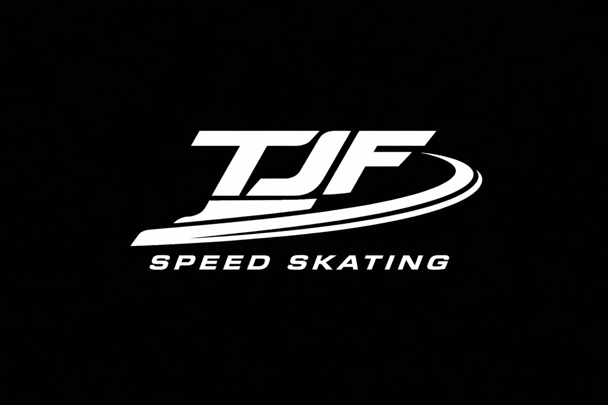

A platform dedicated to developing speed skaters and coaches through coaching, education, training oppourtunities and shared learning.
British speed skaters face unique challenges.
With limited access to long track facilities and a small domestic speed skating community, athletes and coaches often have to learn, adapt and innovate.
TJF Speed Skating exists to:
I want this website to come to serve as both a coaching resource and a record of my own learning journey as a coach.
Coaching insights, technical analysis, training ideas and performance development for speed skaters of all levels.
Sharing knowledge on coaching practice, skill acquisition, athlete-centred coaching and long-term development.
Training camps and pathways to help British skaters access world-class environments.
This website is an ongoing record of my journey as a coach, learner and advocate for speed skating. My hope is that by sharing ideas, experiences, successes and mistakes openly, I can contribute in some small way to the development of athletes, coaches and the wider speed skating community. If something here helps you improve, then the project is serving its purpose.